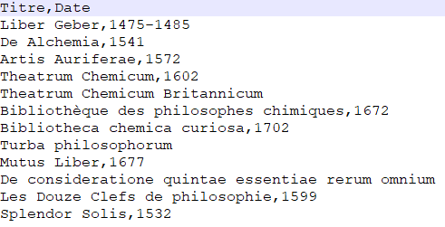
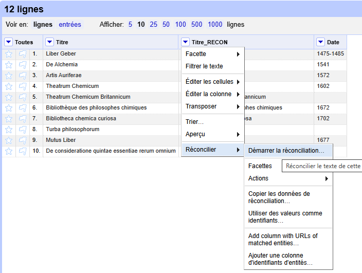
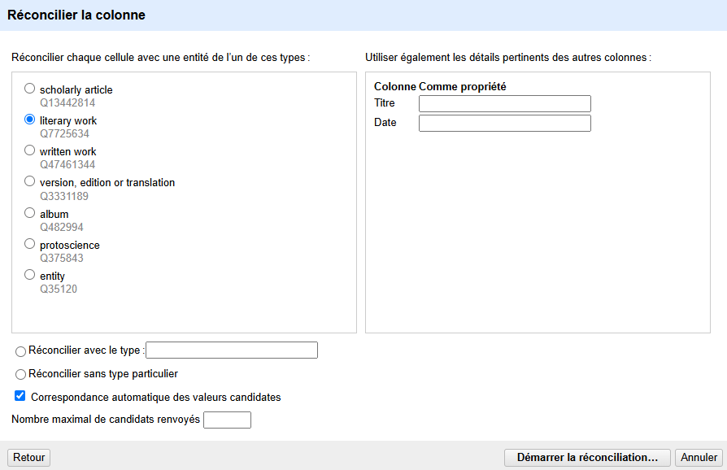
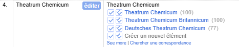
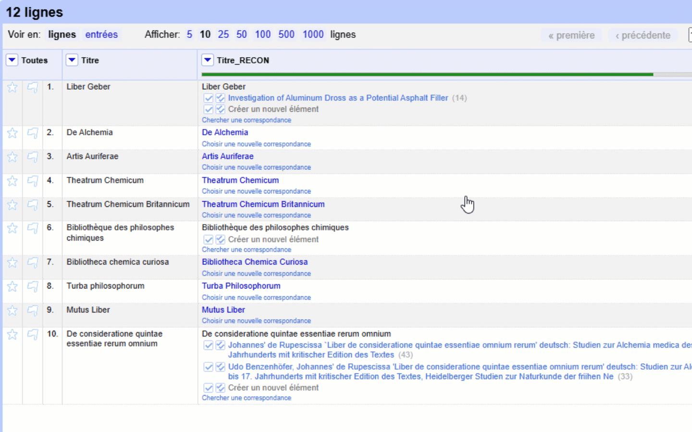
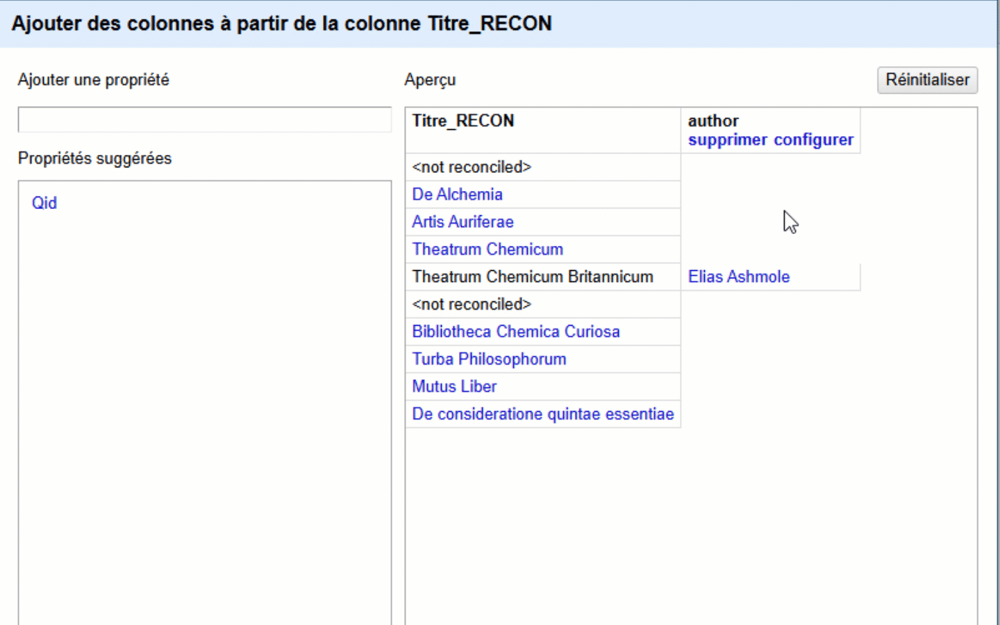
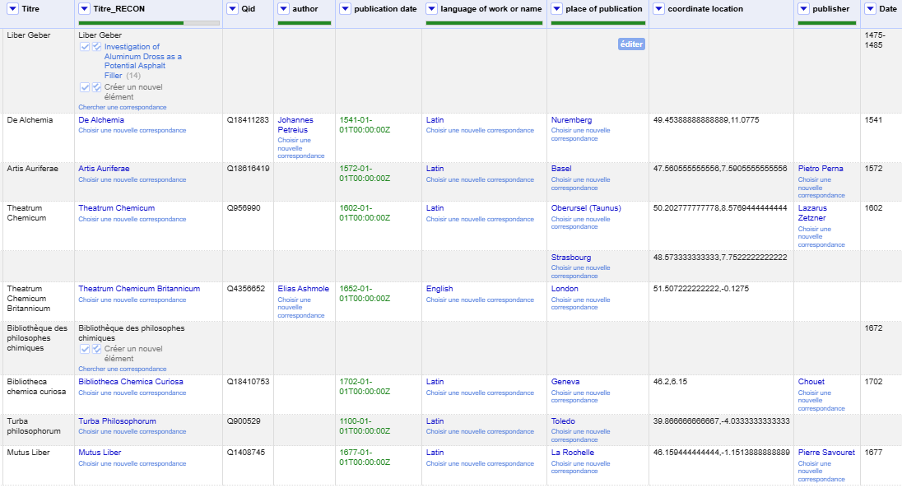

Enrichir ses données avec OpenRefine et le processus de réconciliation
Exemple avec le service de réconciliation de Wikidata
Pascal Martinolli ![]()
OpenRefine; Wikidata; réconciliation; enrichissement des données
1 Enrichir ses données avec OpenRefine et le processus de réconciliation
OpenRefine est connu pour améliorer la qualité des données existantes, principalement en « nettoyant » en lot selon des critères établis et reproductibles. Depuis 2017, OpenRefine peut aussi être utilisé pour lancer un processus appelé « réconciliation » ou « alignement » des données qui consiste à apparier ses données à d’autres. Ce processus permet principalement l’enrichissement des données, mais aussi la normalisation ou la correction d’erreurs, l’évaluation et l’exploration des données.
Nous allons voir dans ce tutoriel comment utiliser OpenRefine sur des données locales pour les enrichir avec des données provenant de Wikidata. Ensuite, nous situerons cette leçon dans un cadre plus large afin d’améliorer ce processus, d’explorer d’autres services de réconciliation et d’adopter des méthodes similaires pertinentes pour la recherche en histoire. Enfin, nous terminerons par une réflexion sur l’apport de ces approches numériques.
2 Exemple pratique pas-à-pas
2.1 Installation
Installer OpenRefine sur son ordinateur (Windows, Mac OS ou Linux). Comme c’est un programme qui s’execute dans le navigateur, il n’est pas nécessaire d’avoir des droits d’administrateur pour l’installer.
2.2 Choisir un jeu de données
Nous allons utiliser un jeu de données sous la forme d’une liste de douze ouvrages d’alchimie en deux colonnes : Titre (pour le titre de l’ouvrage) et Date (pour date de publication, certaines dates sont manquantes). Ce jeu de données (télégeableable) est sous la forme d’un fichier CSV encodé en UTF-8 (voir Figure 1). C’est un format ouvert idéal pour traiter et archiver des données tabulées. Veuillez noter que les résultats présentés ci-dessous peuvent se présenter différemment si vous refaites les mêmes actions, car les données de Wikidata auront changé.

L’objectif est d’enrichir ces données en important des données supplémentaires provenant de Wikidata comme le lieu et la date de publication, le titre normalisé de l’ouvrage, l’auteur et la langue utilisée.
2.3 Lancer OpenRefine et importer les données
Cliquer sur Languages et changer pour Français. Puis cliquer sur Créer un projet > Cet ordinateur > Sélect. fichiers > Sélectionner le fichier CSV > Suivant > Configurer les options d’analyse syntaxique : Les colonnes sont séparées par : une virgule > Cliquer sur Créer un projet.
Vérifier que tout est bien importé ou changer les paramètres de la page Configurer les options d’analyse syntaxique.
On peut noter sur cette page, la possibilité d’importer les données depuis de nombreux formats : XLS et XLSX (Microsoft Excel), JSON (et JSON-LD), fichiers texte à base de lignes, fichiers CSV (ou TSV ou semblables comme notre exemple), fichiers textes à largeur de champ fixe, PC-Axis, MARC, RDF (/N3, /N-Triples, /Turtle, /XML), Wikitext, ODS (fichier de tableur de LibreOffice Calc).
Le processus de réconciliation consiste habituellement en deux étapes :
La réconciliation proprement dite, qui permet d’apparier une colonne de données avec des identifiants d’une source de données externes.
Puis l’enrichissement des données qui consiste à importer de nouvelles données de la source externe grâce à la colonne de données réconciliées.
2.4 Réconcilier une colonne
Tout d’abord nous allons créer un doublon de la colonne Titre. Cette étape est importante puisque le résultat d’une réconciliation réussie remplace souvent le contenu de la cellule originale par le texte du libellé (label dans Wikidata) de la valeur réconciliée. Or, il est souhaitable de pouvoir comparer la colonne de titre originale avec la colonne de titre réconcilié. En science, il est toujours une bonne pratique de ne pas modifier les données originales afin de garantir leur intégrité, leur traçabilité et leur reproductibilité. Toute modification pourrait entraîner des erreurs, des biais ou une perte d’informations importantes, compromettant ainsi la fiabilité des résultats obtenus. Conserver les données brutes permet également aux chercheurs de vérifier et de reproduire les analyses, de comparer différentes approches méthodologiques et de répondre à d’éventuelles critiques en s’appuyant sur des sources inchangées. C’est pourquoi il est recommandé d’effectuer toute transformation ou correction sur une copie des données originales plutôt que sur celles-ci directement.
Cliquer sur les options de la colonne Titre > Editer la colonne > Ajouter une colonne en fonction de cette colonne… > Donner le nom Titre_RECON > Ne rien modifier d’autre (c’est à dire que le contenu sera exactement l’expression value).
Réconcilier la colonne Titre_RECON en cliquant sur les options de cette colonne > Réconcilier > Démarrer la réconciliation (voir Figure 2)

Choisir un service… : Wikidata reconci.link > Suivant.
Dans la case de gauche (voir Figure 3), sélectionner le type de données le plus proche du contenu de la colonne (dans notre cas : literary work Q7725634) ou bien choisir Réconcilier sans type particulier.
Pour le moment, ignorer les autres options > Démarrer la réconciliation…

Attendre que le processus se termine. On peut voir la progression dans une zone jaune en haut du tableau principal.
Une fois terminé, observer plusieurs choses :
- Sous le titre de la colonne, une ligne verte indique le taux de réconciliation. Une ligne complètement verte indique ainsi que toutes les données ont été réconciliées. Il est aussi possible d’afficher et de sélectionner cette information dans les facettes du menu de gauche.
- Que plusieurs éléments de la colonne Titre_RECON sont désormais bleutés et cliquables. Cela veut dire qu’ils ont été appariés avec un élément Wikidata qui devrait leur correspondre (voir Figure 4).
- Que des éléments possèdent plusieurs choix. L’algorithme de réconciliation n’a pu décider quelle valeur choisir (voir Figure 5).

Chaque choix est précédé de deux cases à cocher. La première case avec une coche unique permet de n’apparier que cette cellule. La seconde case à cocher avec deux coches permet d’apparier toutes les cellules identiques de la colonne avec la valeur choisie. Cela est très utile dans le cas d’un grand jeu de données avec des valeurs semblables qui se répètent.
Créer un nouvel élément (pour cette cellule ; ou pour cette cellule et toutes les cellules identiques) : ignorer pour le moment.
Chercher une correspondance : permet de relancer une recherche dans Wikidata avec un autre contenu. Souvent ce qui fonctionne bien, c’est une valeur de cellule plus restreinte (un titre ou un nom plus court par exemple).
Pour aller plus loin, se rendre à la section Comment améliorer la réconciliation ?
En survolant les valeurs proposées en choix, il est possible de visualiser un extrait de l’élément Wikidata. En cliquant sur le lien, cela ouvre un nouveau onglet vers cet élément Wikidata. Il est possible de choisir une valeur pour chaque cellulle non résolue. À la fin de chaque choix pour chaque cellule, il y a un chiffre gris entre parenthèse. Ce chiffre est le score estimé de correspondance par OpenRefine (100 est le meilleur score).
S’il n’y a pas de choix proposé ou si les choix proposés ne sont pas pertinents, alors cliquer sur Choisir une nouvelle correspondance. Il est alors possible de saisir une valeur plus courte ou mieux rédigée pour tenter de repérer l’élément correspondant (voir Figure 6).

2.5 Enrichir son jeu de données
Toutes les cellules de données qui ont été réconciliées peuvent maintenant être enrichies par des données externes si celles-ci sont indexées dans les éléments correspondants de Wikidata.
Cliquer sur les options de la colonne Titre_RECON > Éditer la colonne > Ajouter des colonnes à partir de valeurs réconciliées > Ajouter une propriété : Sélectionner Propriétés suggérées : Qid > OK. Il est aussi possible de cliquer sur les options de la colonne Titre_RECON > Réconciliier > Add column with URLs of matched entities… Nom de la colonne : Qid
Une nouvelle colonne Qid contenant l’identifiant Wikidata est créée (sous la forme d’un identifiant ou sous la forme d’une URL avec l’identifiant, selon la méthode utilisée précédemment).
Recommencer en ajoutant les propriétés suivantes :
Author,
Language of work or name,
Publication Date,
Publisher,
Place of Publication.
Si ces propriétés ne sont pas listées dans Propriétés suggérées alors les écrire une par une dans la case sous Ajouter une propriété (voir Figure 7).

Il est aussi possible de refaire la même opération à partir de la colonne Place of Publication pour récupérer les coordonnées géographiques (Coordinate location) dans le cas où on voudrait visualiser les données sur une carte.
Il est recommandé de faire ces opérations d’enrichissement à la fin de tous vos processus de réconciliation car il n’y a pas de boutons “mise à jour”. Si on veut refaire l’opération dans le futur, par exemple parce que les données Wikidata ont été améliorées entre temps, alors il faut supprimer la colonne et la recréer.
Une fois le jeu de données enrichi, il est possible d’exporter le fichier au format CSV en sélectionnant Exporter > Valeurs séparées par des virgules. C’est un format recommandé pour sa simplicité et ses attributs FAIR (Facile à trouver, Accessible, Interopérable, Réutilisable). Il est aussi possible de l’exporter au format Archive de projet OpenRefine pour permettre de reprendre le travail plus tard ou pour transférer le travail sur un autre ordinateur. Tous les projets OpenRefine en cours sont sauvegardés au fur et à mesure sans intervention de l’utilisateur et ils sont localisés sur l’ordinateur dans le dossier Utilisateur/AddData/Roaming/OpenRefine (le lien se trouve dans le bas de la page Ouvrir un projet).
Voici un aperçu du jeu des données enrichies (février 2025, figure 8). Il peut être téléchargé en csv ou au format OpenRefine.

3 Quelques bonnes pratiques
3.1 Quelles sont les données facilement réconciliables avec Wikidata ?
En raison de l’indexation actuelle de Wikidata, il y a des données plus facilement réconciliables que d’autres. En effet, il y a des types de données qui produisent des résultats satisfaisants en regard du temps investit à aller les repérer. Par exemple :
Les noms de personnes
Les noms d’organisations : institutions, maisons d’édition, etc.
Les lieux géographiques : villes, pays, lieux célèbres, etc.
Les titres d’oeuvres : livres, tableaux, films, etc.
Les identifiants pérennes : DOI, ISBN, ISSN, ORCID, VIAF, etc.
Les sujets de recherche : sujets-descripteurs, vedettes-matières, mots-clés, etc.
De plus, il y a aussi des types de données enrichies mieux indexées que d’autres. Une fois les données réconciliées, voici des données importables les mieux indexées dans Wikidata :
Pour les personnes : sexe, pays de citoyenneté, profession et identifiants.
Pour les institutions : ville, pays d’origine et identifiants .
Pour les lieux : coordonnées géographiques.
Pour les oeuvres : auteurs, années de publication et langues.
Pour les sujets de recherche : catégories plus génériques.
3.1.1 Dans quels cas la réconciliation n’est pas adaptée ?
Dans OpenRefine, lorsqu’une colonne de données peut être normalisée avec une liste de vocabulaire contrôlé de moins d’une vingtaine d’éléments, alors il est plus simple d’utiliser des facettes pour traiter les données. La réconciliation est plutôt adaptée pour tenter d’apparier ses données avec un grand ensemble de candidats potentiels.
3.1.2 Est-il possible de réconcilier avec d’autres sources de données ?
Dans cette leçon, OpenRefine a été testé avec Wikidata en raison de la grande diversité des types de données que l’on y trouve. En 2025, on peut dire que les données les plus notables sont souvent présentes dans Wikidata et qu’elles sont plus ou moins bien indexées.
Cependant, il est possible de connecter OpenRefine à d’autres services de réconciliation plus spécifiques. Voici quelques exemples :
ORCID : pour récupérer l’identifiant de chercheurs.
VIAF : pour réconcilier avec un grand catalogue de documents, d’auteurs ou de maisons d’édition.
Liste des services actifs actuellement. Parmi ces services, voici une sélection intéressant plus particulièrement les historien.nes :
Pleiades Geocollider : pour repérer des anciens lieux géographiques (sites, villes, etc.).
PeriodO : pour repérer des périodes historiques ou archéologiques.
Kerameikos : pour repérer des informations sur l’amphorologie et les céramiques anciennes.
GODOT – Graph of Dated Objects and Texts : pour repérer des dates selon différents calendriers de Rome et de la Grèce antique.
Nomisma : pour repérer des informations numismatiques sur les monnaies anciennes.
Voici quelques suggestions de méthodes si une institution ne possède pas de service de réconciliation :
- Écrire à l’institution pour qu’elle mette en place un tel service.
- Utiliser les données de Wikidata comme intermédiaires car de nombreuses métadonnées d’autres sources se trouvent déjà structurées dans Wikidata. Par exemple, les descripteurs de la Library of Congress (LCSH) ne sont plus disponibles directement avec un service de réconciliation. Cependant, une partie des descripteurs LCSH sont indexés dans Wikidata.
- Dans OpenRefine, utiliser une colonne d’URL de pages web pour récupérer le contenu de ces pages et traiter leurs contenus pour en extraire les données voulues. Ainsi, si vous avez des URL vers des pages web de catalogues d’institution, il est raisonnablement programmable d’extraire les champs de la page de description d’un élément de ce catalogue en ligne.
- Télécharger les données ou la liste des données d’une institution et faire une réconciliation avec les informations téléchargées et traitées.
3.1.3 Y a-t-il d’autres méthodes pour réconcilier des données ?
3.1.3.1 Avec des données d’un autre projet OpenRefine
Cette méthode est semblable à la formule RECHERCHEV (VLOOKUP) de Excel. Ce n’est pas tout à fait de la réconciliation car c’est un appariement strict entre deux tables, basés sur une colonne commune contenant une clé. Ce billet de Ruth Tillman explique ce processus de croisement de cellules (cell cross).
Comme ce processus de croisement de cellules est très rigoureux, il a des inconvénients : il est sensible à la casse, aux espaces, aux erreurs de saisie, etc. Pour pouvoir faire la même chose mais bénéficier de l’algorithme de correspondance floue (fuzz matching) de la réconciliation, il faut installer une extension à OpenRefine qui s’appelle reconcile-csv.
3.1.3.2 Avec un programme codé spécifiquement
Par exemple, il est possible de coder en Python (ou autre) un programme qui lance le processus de réconciliation de manière autonome pour repérer quelles sont les meilleurs candidats pour une colonne de valeurs (par exemple avec Reconciler). De plus, il est ensuite possible à partir d’une colonne d’identifiants de créer une ou plusieurs colonnes de données externes importées (par exemple avec le package WikidataIntegrator qui va utiliser la valeur du Qid et les codes des propriétés à importer).
3.1.4 Faire un plan et documenter chaque décision
Avant de vous lancer dans un processus de réconciliation, définissez des objectifs et concevez un plan progressif de traitement des données pour atteindre cet objectif. Ensuite, lors du déroulement de ce plan, documenter toutes les décisions prises à chaque étape.
Le processus de réconciliation peut être très lent si vous l’appliquez sur un grand nombre de données. Pour cette raison, je vous recommande de tester votre plan sur un petit nombre d’enregistrements (entre 10 et 20). Si ce plan est adapté, alors appliquez ce plan à toutes vos données.
3.1.5 Ajouter une colonne avec les identifiants
Avant l’exportation finale des données enrichies, je recommande d’ajouter une nouvelle colonne qui contient l’identifiant unique de chaque réconciliation (Qid dans le cas de Wikidata). C’est particulièrement important si vous faites une exportation du jeu de données enrichies au format CSV. En effet, si vous ne le faites pas, seul le libellé de la cellule sera exporté et non la valeur de la clé d’appariement (de toutes les cases réconciliées bleutées).
Pour cela, avec notre exemple ci-dessus, cliquer sur les options de la colonne Titre_RECON > Réconcilier > Ajouter une colonne d’identifiants d’entités… Donner le titre de la colonne : Titre_QID
3.1.7 À quoi correspond Créer un nouvel élément ?
Cela permet de marquer un enregistrement pour créer un élément dans Wikidata depuis OpenRefine. Je n’utilise pas cette option car je préfère créer des nouveaux éléments directement dans Wikidata (manuellement ou avec QuickStatements). Cela garanti une meilleure indexation et plus de contrôle sur le processus de création ou d’enrichissement. En effet, lorsque OpenRefine exporte des données dans Wikidata, les détails des résultats du versement (log) ne sont pas affichés à l’issue du processus. La boîte de dialogue d’OpenRefine signale certaines erreurs, mais celles-ci restent peu compréhensibles. Il est donc difficile d’évaluer le succès d’un versement de données sans regarder son propre historique de contributions directement dans Wikidata.
Notez que si vous créez ou enrichissez un élément dans Wikidata, ce dernier ne sera pas immédiatement disponible dans OpenRefine pour la réconciliation ou l’importation de données externes. En effet, il faut plusieurs heures avant que le service de réconciliation Wikidata accède aux modifications.
3.1.8 Réconcilier pour normaliser les données
Notons qu’outre l’alignement avec des données externes et l’enrichissement des données initiales, une autre utilité de la réconciliation est de normaliser les données initiales via le service de réconciliation. En effet, comme nous l’avons vu le contenu d’une cellule réconciliée est remplacé par le texte du libellé de la donnée correspondante de la base de données externe.
Comme mentionné précédemment, il est important de conserver la colonne des données initiales non réconciliées pour pouvoir comparer les deux.
4 Discussion
Comme le souligne Yann Audin (2024), « les logiciels, matériel informatique (hardware), bases de données et algorithmes ne sont pas politiquement neutres, et ils ont des impacts importants sur notre horizon épistémique. » L’utilisation de la réconciliation dans un projet de recherche en histoire soulève ainsi des questions méthodologiques concernant l’enrichissement des corpus et les processus de traitement des données.
Tout d’abord, le choix du service de réconciliation influence directement la qualité et l’exhaustivité des données enrichies. Par exemple, si l’on opte pour Wikidata, les entités les plus notables et déjà bien référencées bénéficieront d’un enrichissement plus précis et détaillé, tandis que les entités marginales, moins documentées ou issues de contextes historiographiques peu explorés, risquent d’être sous-représentées. Ce phénomène peut renforcer des biais existants dans la production et la transmission du savoir historique. Une manière de pallier ce biais consiste à contribuer activement à Wikidata en ajoutant de nouveaux éléments ou en améliorant ceux existants. Cette possibilité de correction n’existe pas toujours avec d’autres services de réconciliation, qui ne permettent pas nécessairement une contribution ouverte pour rectifier les asymétries dans les données. De plus, plutôt que de se limiter à un seul service comme Wikidata, il pourrait être intéressant d’explorer la combinaison de plusieurs sources pour réduire des biais liés à la sous-représentation d’entités marginales.
Enfin, l’intégration de la réconciliation dans un flux de travail dynamique reste un défi méthodologique. Dans l’état actuel des outils comme OpenRefine, la réconciliation et l’enrichissement sont des processus ponctuels, réalisés à un instant donné, sans mécanisme intégré permettant une mise à jour automatique des données enrichies ni une synchronisation continue entre les sources originales et les bases externes. Cette limitation entrave la construction de modèles de données évolutifs et interconnectés, ce que certains chercheurs qualifient de problème d’« interopérabilité verticale » (Macneil et Plankyté, 2025). Une première approche possible pour atténuer ce problème consiste à expliciter ces contraintes dans un plan de gestion des données de recherche (PGD), afin d’assurer une documentation rigoureuse des choix méthodologiques et des limites inhérentes à l’usage de la réconciliation. De plus, comme mentionné dans cette leçon, une autre approche est de toujours conserver les données d’origine pour maintenir un système intéropérable stable à travers plusieurs manipulations successives et espacées dans le temps.
5 Remerciements
Je remercie Maxime Guénette qui a suscité, relu et ajouté de nombreux conseils à cette leçon; Caroline Patenaude pour sa relecture; Laurence Charest et Teresa Bascik pour leurs tests de versement de OpenRefine vers Wikidata; et enfin la communauté Wikimédia et Wikidata pour leurs contributions.
6 Sources
Audin, Yann. 2024. « For a General Theory of Scholars–Digital Tools Interactions » Digital Studies/Le champ numérique 15(1): 1-20. https://doi.org/10.16995/dscn.11058.
Baer, Helen. 2024. Reconciling Metadata with OpenRefine. Digital Public Library of America https://youtu.be/zWUdwN6s0ZU
Bauer, Michael. 2015. reconcile-csv. https://okfnlabs.org/projects/reconcile-csv/
Delpeuch, Antonin. 2023. My roadmap for OpenRefine https://antonin.delpeuch.eu/posts/my-roadmap-for-openrefine/#reconciliation
Doten-Snitker, K., Pfaff, S. & Hsiao, Y. « Ideational diffusion and the great witch hunt in Central Europe » . Theory and Society 53, 1291-1319 (2024). https://doi.org/10.1007/s11186-024-09576-1
LibreOffice contributors. 2000-2024. LibreOffice. https://fr.libreoffice.org/
Macneil, Rory & Plankyté, Vaida. 2025. « The time is now! Vertical interoperability between research tools: an essential enabler for the FAIRification of data ». Upstream. https://doi.org/10.54900/8m9by-kfy03
OpenRefine contributors. 2008-2024. OpenRefine. https://openrefine.org/
Patenaude, Caroline. 2021. OpenRefine : au secours des désordonnées. Tutoriel. Bibliothèque des lettres et sciences humaines, Université de Montréal. https://crlnp.github.io/openrefine/
Tillman, Ruth. 2020. Learning Cell Cross in OpenRefine. https://ruthtillman.com/talk/cell-cross-webinar-2020-03/
University of Toronto Libraries. OpenRefine Augmenting Activity 2: Using Reconciliation Services. 2019. https://mdl.library.utoronto.ca/technology/tutorials/openrefine-augmenting-activity-2-using-reconciliation-services
3.1.6 Comment améliorer la réconciliation ?
Vous remarquerez probablement que la réconciliation est parfois peu satisfaisante. Voici quelques techniques pour réduire les réconciliations manuelles après une réconciliation automatique insatisfaisante.
3.1.6.1 Pour une réconciliation plus stricte
3.1.6.2 Pour une réconciliation moins stricte (proposant ou résolvant plus de choix)
De Alchemia (1541)->De AlchemiaHist Sci Med->Histoire des sciences médicalesAHA->American Historical Association